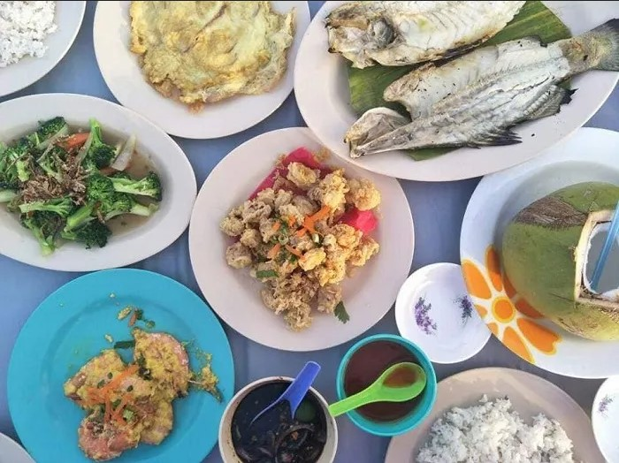
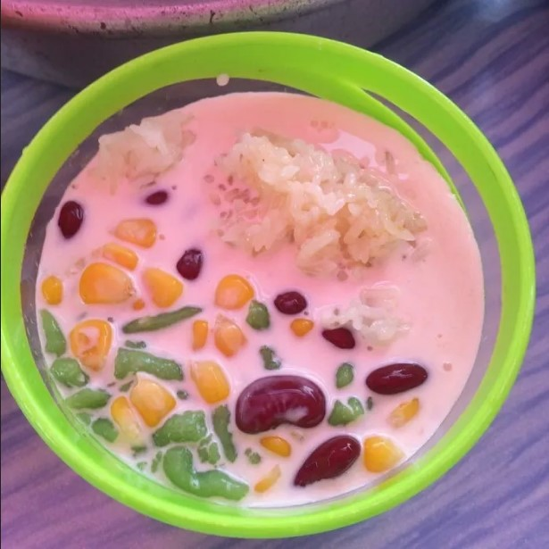
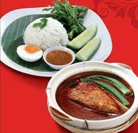
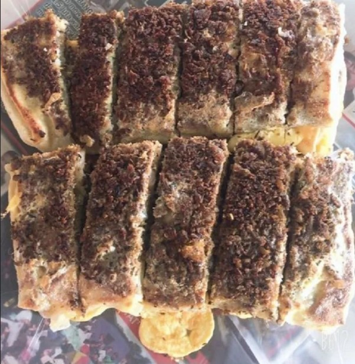

⠀⠀⠀⠀⠀⠀⠀⠀⠀⠀⠀⠀⠀⠀⠀⠀⠀⠀⠀⠀⠀⠀⠀⠀⠀⠀⠀Official Website for Kampung Umbai Community
The main attraction of ikan bakar klasik terapung Umbai Baru is the architecture of the building. The building is float on the water. Customers can enjoy the view of the place while enjoying their foods. The dishes that are served at here are seafood
ant the most popular dish is grill fish. Apart from that, this place provides the customer with some of facilities such as toilet and mosque. This place is located at Umbai, 75460 Melaka and usually operate at 4.00pm until 12.00pm.

Cendol Sawit Melaka is located by the roadside that invites many fans of its own. It is run by a young entrepreneur who uses hereditary recipes of a family who once ran this business. The cendol was made with “santan sawit” that will give the different
taste than coconut milk that usually use. Moreover, there are various types of cendol which are “cendol kacang merah”, “cendol jagung”, “cendol pulut” and etc. This stall is located at KM 12 Kampung Pernu, 75460 Melaka and operate from 11.30am until 6.00pm.

Melaka is well-known with their asam pedas. Asam pedas Misswara is the most popular restaurant that served the best among the best of asam pedas in Umbai. At asam pedas Misswara, they offer a variety of asam pedas and other meals for lunch. Furthermore,
the most chosen asam pedas are “asam pedas pari”, “asam pedas tetel” and “asam oedas jenahak”. This restaurant is open from 8.00am until 3.30pm and located at Jalan Telok Emas / Umbai, Kampung Bukit Tembakau, 75460 Melaka.

This warung is famous with their murtabak Singapore and roti canai. Both of the meals are the most ordered by the people. It is because their roti canai is soft and crispy meanwhile the murtabak is overflowing with minced meat as well as spices and other
ingredients that make the murtabak taste better. Other than that, their nasi lemak with sambal also became a favorite of the locals. Warung Kak Siti murtabak Singapore dan roti canai is located at Jalan Melaka, Kampung Tengah, Jalan Merlimau / Melaka, Kampung Umbai, 77300, Melaka and their operation hour is at 6.30am until 12.00pm.

Others:
Welcome to the latest official Website of Kampung Umbai! Do enjoy your visit here and make sure to follow and join us on social media !
Official email address:
kampungumbaikami@gmail.com
The official theme song of Kampung Umbai
Kisah impian Kampung ku Umbai
Megah harmoni aman dan damai
Berganding bahu bantu membantu
Teguh hati sepakat berpadu
Desa bistari kampung ku Umbai
Lahir pemimpin bijak dan pandai
Setia berkhidmat pacu pembangunan
Terus maju langkah berwawasan
Desa bertuah kampung ku Umbai
Cantik bersih indah sekali
Ada ternakan dan juga perusahaan
Tingkat ekonomi jana pendapatan
Reff
Kampung ku Umbai desa gemilang
Sudah terkenal nama dijulang
Berdaya maju bersinar cemerlang
Tegoh berpadu desa terbilang.....
Desa ku indah Kampung ku Umbai
Menggamit pelancong datang beramai
Hasil lautan menjadi pilihan
Ikan bakar juadah menyelera
Desa bersejarah kampung ku Umbai
Berbudaya dan menjaga warisan
Hormat menghormati menjadi amalan
Bersyukur dengan anugerah tuhan